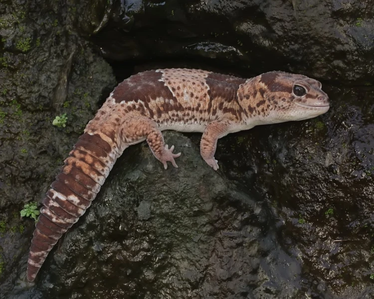
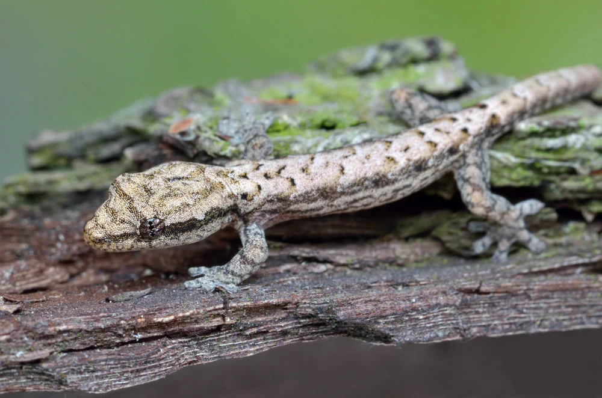

Different Gecko Species
The African Fat Tailed Gecko
(Hemitheconyx caudicinctus)
The African Fat-Tailed Gecko is a nocturnal, ground-dwelling lizard native to West Africa. It gets its name from its thick tail, which stores fat as an energy reserve during times of food scarcity. This species typically grows to about 7-9 inches in length and has a calm temperament, making it popular in the pet trade. Its natural coloration includes brown and tan bands, often with a white dorsal stripe, though captive breeding has produced many unique morphs. Unlike most geckos, it has eyelids, allowing it to blink and keep its eyes clean. It thrives in warm, slightly humid environments and feeds on insects such as crickets and mealworms. African fat-tailed geckos are generally easy to care for, but they require proper temperature, humidity, and vitamin supplementation to stay healthy. With good care, they can live up to 15-20 years in captivity.
The Mourning Gecko
(Lepidodactylus lugubris)
The Mourning Gecko is a small, nocturnal gecko native to coastal regions of the Indo-Pacific but now found in many tropical areas worldwide. It is best known for being parthenogenetic, meaning nearly all individuals are female and reproduce without males by laying fertile eggs that develop into genetic clones. Mourning geckos are typically 3.5 to 4 inches long and have a slender body with a mottled brown or tan pattern that helps them blend into their surroundings. They are arboreal and often found in trees, shrubs, and even inside buildings, where they feed on small insects and nectar. These geckos are highly social and often live in groups, chirping softly to communicate. They are also quite hardy and adaptable, making them popular among reptile enthusiasts and bioactive terrarium keepers. Despite their small size, they are quick and curious, often exploring their environment actively at night. Their ability to thrive in a variety of habitats makes them a successful and widespread species.